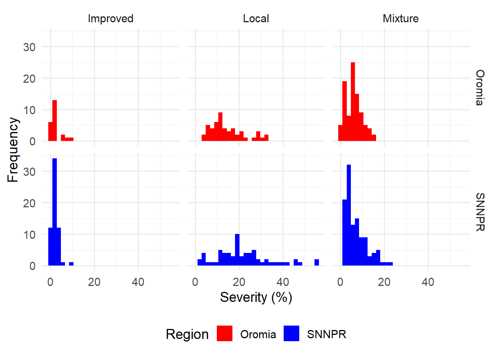
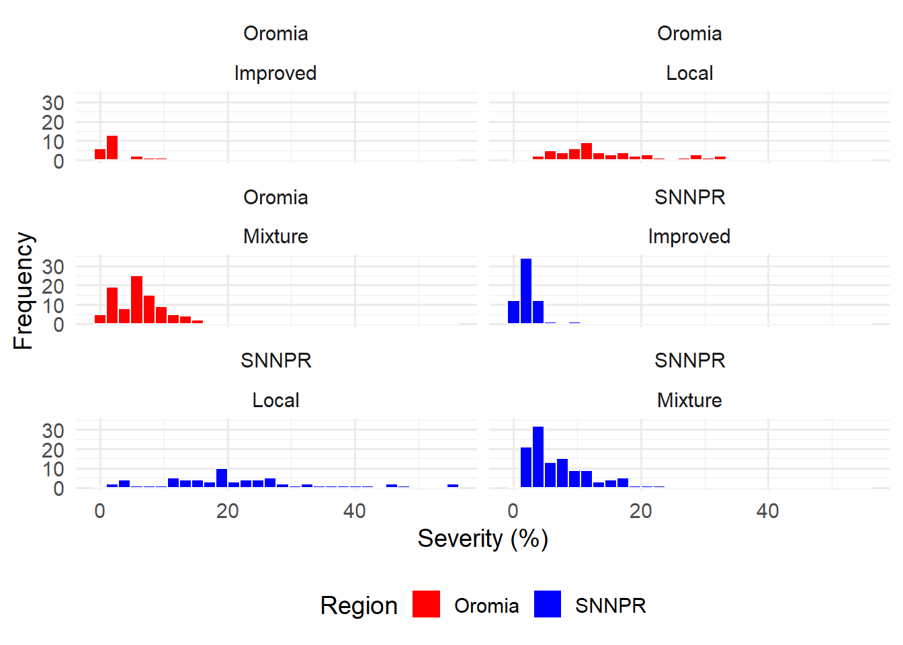
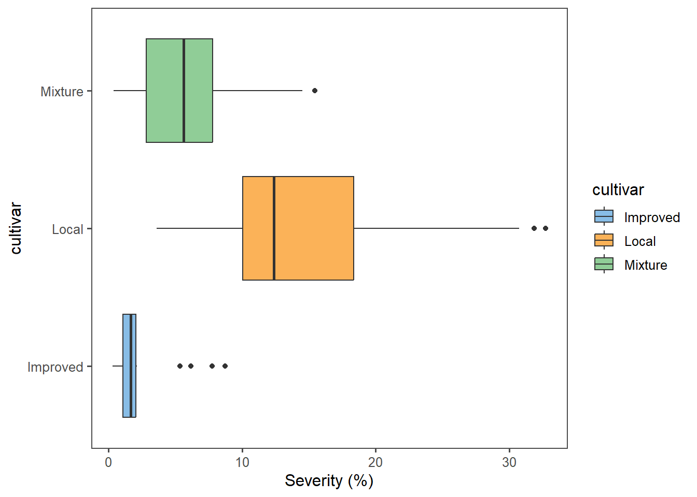
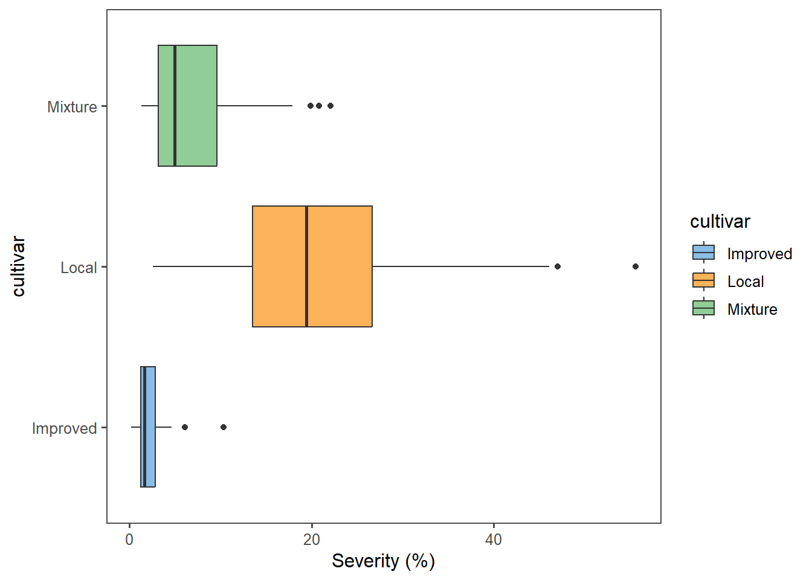
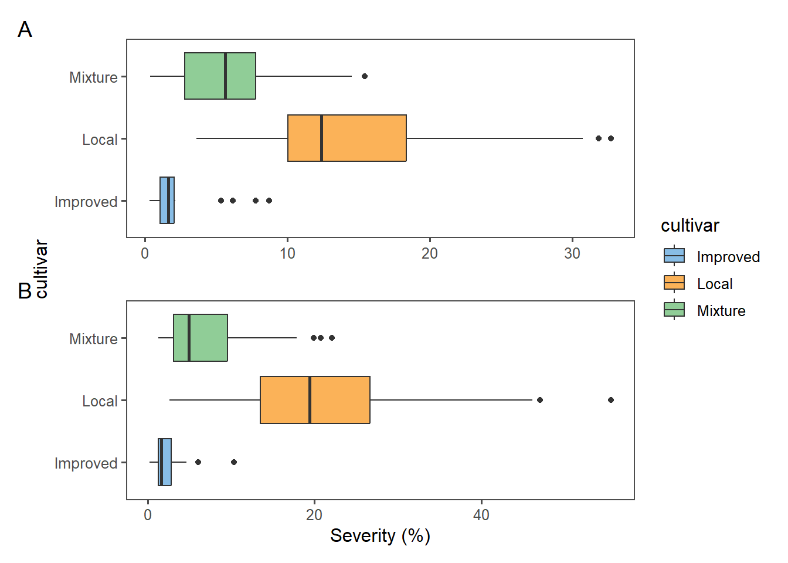
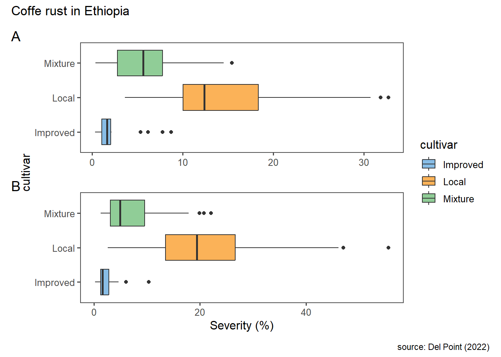
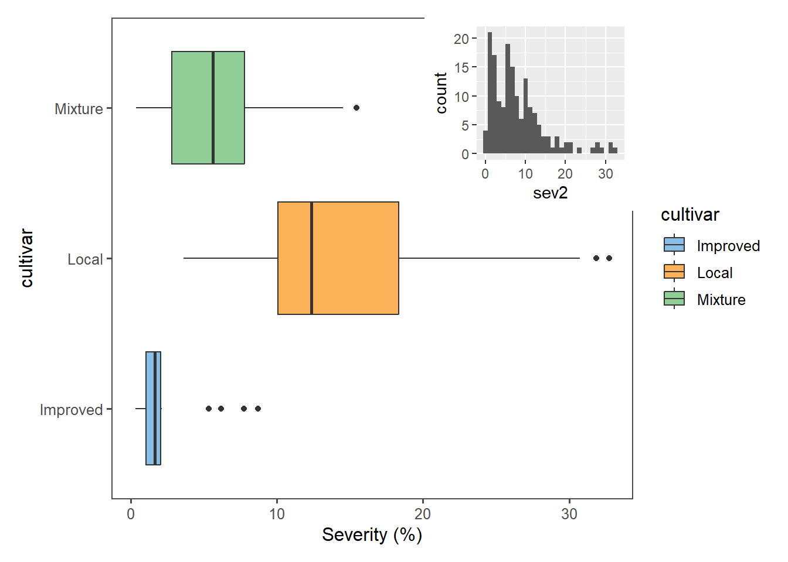

# <-
# =
a <- 1
b = 1
a[1] 1# <-
# =
a <- 1
b = 1
a[1] 1Exemplos de vetores numéricos - Inteiro e decimal
# Númerico inteiro
serie1 <- c(1:4)
# Númerico decimal
serie2 <- c(1.5,2.5,3.5,4.5)
# Caractere
serie3 <- c("um", "dois", "tres", "quatro")
# Booleano (verdadeiro ou falso)
serie4 <- c(TRUE, FALSE, FALSE, FALSE)
#serie4: binario
#Vetores independentesa <- "Isabela - qualquer texto com mais de uma palavra"
a <- c("um", "dois", "tres")Nesta etapa iremos criar um dataframe (base de dados) a partir de variaveis individuais que foram criadas previamente. A principal caracteristica de um data frame é possuir linha e colunas.
Cria uma tabela com variaveis (pode ser diferentes - numerica inteira, decimal, caractere.. ) de mesmo tamanho para visualizar meus dados.
Obs: cars- já é um data frame, que tem o “speed” e o “dist” como variavel. Se quiser criar um data frame a partir de outro data frame so precisa do sinal de atribuição (<-)
library(tidyverse)
cr <- read_csv("https://raw.githubusercontent.com/emdelponte/paper-coffee-rust-Ethiopia/master/data/survey_clean.csv")Pacote que permite fazer essa exportação é writexl
.xlsx ou .csvlibrary(writexl)
write_xlsx(cr, "cr.xlsx")
write_csv(cr, "cr.csv")Iremos rever algumas funções ou verbos do pacote dplyr
Select()# Estou selecionando apenas algumas colunas, 1 a 10 e a coluna 13.
cr %>%
select(1:10, 13)# A tibble: 405 × 11
farm region zone district lon lat altitude cultivar shade
<dbl> <chr> <chr> <chr> <dbl> <dbl> <dbl> <chr> <chr>
1 1 SNNPR Bench Maji Debub Bench 35.4 6.90 1100 Local Sun
2 2 SNNPR Bench Maji Debub Bench 35.4 6.90 1342 Mixture Mid shade
3 3 SNNPR Bench Maji Debub Bench 35.4 6.90 1434 Mixture Mid shade
4 4 SNNPR Bench Maji Debub Bench 35.4 6.90 1100 Local Sun
5 5 SNNPR Bench Maji Debub Bench 35.4 6.90 1400 Local Sun
6 6 SNNPR Bench Maji Debub Bench 35.4 6.90 1342 Mixture Mid shade
7 7 SNNPR Bench Maji Debub Bench 35.4 6.90 1432 Mixture Mid shade
8 8 SNNPR Bench Maji Debub Bench 35.4 6.90 1100 Local Sun
9 9 SNNPR Bench Maji Debub Bench 35.4 6.89 1400 Local Sun
10 10 SNNPR Bench Maji Debub Bench 35.4 6.88 1342 Mixture Mid shade
# ℹ 395 more rows
# ℹ 2 more variables: cropping_system <chr>, sev2 <dbl># Posso selecionar as coluna por nomes.
cr %>%
select(farm, region, inc, sev2)# A tibble: 405 × 4
farm region inc sev2
<dbl> <chr> <dbl> <dbl>
1 1 SNNPR 86.7 55.6
2 2 SNNPR 51.3 17.9
3 3 SNNPR 43.2 8.25
4 4 SNNPR 76.7 46.1
5 5 SNNPR 47.2 12.3
6 6 SNNPR 51.3 19.9
7 7 SNNPR 48.3 11.9
8 8 SNNPR 86.7 55.6
9 9 SNNPR 47.2 11.6
10 10 SNNPR 51.1 11.4
# ℹ 395 more rows# Selecionei todas as colunas, menos a "sev2".
cr %>%
select(-sev2)# A tibble: 405 × 12
farm region zone district lon lat altitude cultivar shade
<dbl> <chr> <chr> <chr> <dbl> <dbl> <dbl> <chr> <chr>
1 1 SNNPR Bench Maji Debub Bench 35.4 6.90 1100 Local Sun
2 2 SNNPR Bench Maji Debub Bench 35.4 6.90 1342 Mixture Mid shade
3 3 SNNPR Bench Maji Debub Bench 35.4 6.90 1434 Mixture Mid shade
4 4 SNNPR Bench Maji Debub Bench 35.4 6.90 1100 Local Sun
5 5 SNNPR Bench Maji Debub Bench 35.4 6.90 1400 Local Sun
6 6 SNNPR Bench Maji Debub Bench 35.4 6.90 1342 Mixture Mid shade
7 7 SNNPR Bench Maji Debub Bench 35.4 6.90 1432 Mixture Mid shade
8 8 SNNPR Bench Maji Debub Bench 35.4 6.90 1100 Local Sun
9 9 SNNPR Bench Maji Debub Bench 35.4 6.89 1400 Local Sun
10 10 SNNPR Bench Maji Debub Bench 35.4 6.88 1342 Mixture Mid shade
# ℹ 395 more rows
# ℹ 3 more variables: cropping_system <chr>, farm_management <chr>, inc <dbl># Para quando tem muitas colunas que quero excluir.
cr %>%
select(- c(inc, sev2))# A tibble: 405 × 11
farm region zone district lon lat altitude cultivar shade
<dbl> <chr> <chr> <chr> <dbl> <dbl> <dbl> <chr> <chr>
1 1 SNNPR Bench Maji Debub Bench 35.4 6.90 1100 Local Sun
2 2 SNNPR Bench Maji Debub Bench 35.4 6.90 1342 Mixture Mid shade
3 3 SNNPR Bench Maji Debub Bench 35.4 6.90 1434 Mixture Mid shade
4 4 SNNPR Bench Maji Debub Bench 35.4 6.90 1100 Local Sun
5 5 SNNPR Bench Maji Debub Bench 35.4 6.90 1400 Local Sun
6 6 SNNPR Bench Maji Debub Bench 35.4 6.90 1342 Mixture Mid shade
7 7 SNNPR Bench Maji Debub Bench 35.4 6.90 1432 Mixture Mid shade
8 8 SNNPR Bench Maji Debub Bench 35.4 6.90 1100 Local Sun
9 9 SNNPR Bench Maji Debub Bench 35.4 6.89 1400 Local Sun
10 10 SNNPR Bench Maji Debub Bench 35.4 6.88 1342 Mixture Mid shade
# ℹ 395 more rows
# ℹ 2 more variables: cropping_system <chr>, farm_management <chr>Filter()cr %>%
select(farm, region, inc) %>%
filter(inc > 50)# A tibble: 70 × 3
farm region inc
<dbl> <chr> <dbl>
1 1 SNNPR 86.7
2 2 SNNPR 51.3
3 4 SNNPR 76.7
4 6 SNNPR 51.3
5 8 SNNPR 86.7
6 10 SNNPR 51.1
7 12 SNNPR 76.0
8 14 SNNPR 51.3
9 16 SNNPR 53.2
10 20 SNNPR 52.2
# ℹ 60 more rowscr %>%
select(farm, region, inc) %>%
filter(region == "SNNPR")# A tibble: 240 × 3
farm region inc
<dbl> <chr> <dbl>
1 1 SNNPR 86.7
2 2 SNNPR 51.3
3 3 SNNPR 43.2
4 4 SNNPR 76.7
5 5 SNNPR 47.2
6 6 SNNPR 51.3
7 7 SNNPR 48.3
8 8 SNNPR 86.7
9 9 SNNPR 47.2
10 10 SNNPR 51.1
# ℹ 230 more rowscr %>%
select(farm, region, zone, inc) %>%
filter(zone == "Bench Maji")# A tibble: 45 × 4
farm region zone inc
<dbl> <chr> <chr> <dbl>
1 1 SNNPR Bench Maji 86.7
2 2 SNNPR Bench Maji 51.3
3 3 SNNPR Bench Maji 43.2
4 4 SNNPR Bench Maji 76.7
5 5 SNNPR Bench Maji 47.2
6 6 SNNPR Bench Maji 51.3
7 7 SNNPR Bench Maji 48.3
8 8 SNNPR Bench Maji 86.7
9 9 SNNPR Bench Maji 47.2
10 10 SNNPR Bench Maji 51.1
# ℹ 35 more rows#Estou pegando todas as zonas menos a Bench MAji. **"!="**
cr %>%
select(farm, region, zone, inc) %>%
filter(zone != "Bench Maji")# A tibble: 360 × 4
farm region zone inc
<dbl> <chr> <chr> <dbl>
1 46 SNNPR Sheka 81.8
2 47 SNNPR Sheka 29.5
3 48 SNNPR Sheka 31.5
4 49 SNNPR Sheka 54.5
5 50 SNNPR Sheka 74.5
6 51 SNNPR Sheka 32.7
7 52 SNNPR Sheka 42.4
8 53 SNNPR Sheka 74.2
9 54 SNNPR Sheka 76.9
10 55 SNNPR Sheka 33.2
# ℹ 350 more rows# Criando outro data frame: Criando um subconjunto do "cr".
cr2 <- cr %>%
select(farm, region, zone, inc) %>%
filter(zone != "Bench Maji")%in%
cr2 <- cr %>%
select(farm, region, zone, inc) %>%
filter(zone %in% c("Bench Maji", "Keffa"))
cr %>%
select(farm, region, zone, inc) %>%
filter(region == "SNNPR") %>%
filter(zone != "Sidama")# A tibble: 180 × 4
farm region zone inc
<dbl> <chr> <chr> <dbl>
1 1 SNNPR Bench Maji 86.7
2 2 SNNPR Bench Maji 51.3
3 3 SNNPR Bench Maji 43.2
4 4 SNNPR Bench Maji 76.7
5 5 SNNPR Bench Maji 47.2
6 6 SNNPR Bench Maji 51.3
7 7 SNNPR Bench Maji 48.3
8 8 SNNPR Bench Maji 86.7
9 9 SNNPR Bench Maji 47.2
10 10 SNNPR Bench Maji 51.1
# ℹ 170 more rowscr2 <- cr %>%
select(farm, region, zone, inc) %>%
filter(zone != "Bench Maji")
write_xlsx(cr2, "cr2.xlsx")Count(): Vai contar alguma coisa, para não ter que ficar contando um por um na tabela.
cr %>%
count(zone)# A tibble: 9 × 2
zone n
<chr> <int>
1 Bale 30
2 Bench Maji 45
3 Gedio 45
4 Ilu AbaBora 45
5 Jimma 45
6 Keffa 45
7 Sheka 45
8 Sidama 60
9 West Wellega 45# Contar quantas zonas tenho em cada distrito. Deixa meu arquivo em formato longo, onde repete os nome da zone.
cr %>%
count(zone, district)# A tibble: 27 × 3
zone district n
<chr> <chr> <int>
1 Bale Delo Menna 15
2 Bale Harena Buluk 15
3 Bench Maji Debub Bench 15
4 Bench Maji Guraferda 15
5 Bench Maji Sheko 15
6 Gedio Dila Zuria 15
7 Gedio Wenago 15
8 Gedio Yirgachefe 15
9 Ilu AbaBora Ale 15
10 Ilu AbaBora Matu 15
# ℹ 17 more rowsOBS: Podemos fazer a mesma coisa do count(), utilizando o tally()
group_by
cr %>%
group_by(zone, district) %>%
tally()# A tibble: 27 × 3
# Groups: zone [9]
zone district n
<chr> <chr> <int>
1 Bale Delo Menna 15
2 Bale Harena Buluk 15
3 Bench Maji Debub Bench 15
4 Bench Maji Guraferda 15
5 Bench Maji Sheko 15
6 Gedio Dila Zuria 15
7 Gedio Wenago 15
8 Gedio Yirgachefe 15
9 Ilu AbaBora Ale 15
10 Ilu AbaBora Matu 15
# ℹ 17 more rowsPara saber quantas ocorrencias tem, fazendo o cruzamento de region e cultivar, como se fosse uma tabela.
Utiliza o pacote janitor que tem a função tabyl
tabyl é muito parecido com o count(), porém ele tras o nome das zonas, as contagem e o percentual. Isso quando selecionamos apenas uma coluna (zone).library(janitor)
cr %>%
tabyl(zone) zone n percent
Bale 30 0.07407407
Bench Maji 45 0.11111111
Gedio 45 0.11111111
Ilu AbaBora 45 0.11111111
Jimma 45 0.11111111
Keffa 45 0.11111111
Sheka 45 0.11111111
Sidama 60 0.14814815
West Wellega 45 0.11111111# Tabela de contigencia:
cr %>%
tabyl(zone, cultivar) zone Improved Local Mixture
Bale 0 14 16
Bench Maji 0 26 19
Gedio 15 13 17
Ilu AbaBora 14 11 20
Jimma 4 6 35
Keffa 11 0 34
Sheka 6 10 29
Sidama 28 17 15
West Wellega 5 19 21cr %>%
tabyl(cultivar, shade) cultivar Full shade Mid shade Sun
Improved 83 0 0
Local 0 0 116
Mixture 127 79 0# Separa em duas tabela por região, quando utilizamos 3 variaveis (cultivar, shade, region).
cr %>%
tabyl(cultivar, shade, region)$Oromia
cultivar Full shade Mid shade Sun
Improved 23 0 0
Local 0 0 50
Mixture 58 34 0
$SNNPR
cultivar Full shade Mid shade Sun
Improved 60 0 0
Local 0 0 66
Mixture 69 45 0OBS: - Para fazer um gráfico com a tabela de contigencia, é melhor usar o count() do que o tabyl(), porque ela precisa estar em formato longo. - O tabyl é mais interessante para olhar os valores e não para fazer gráfico.
cr %>%
count(cultivar, shade)# A tibble: 4 × 3
cultivar shade n
<chr> <chr> <int>
1 Improved Full shade 83
2 Local Sun 116
3 Mixture Full shade 127
4 Mixture Mid shade 79Arrange()# Ordena do menor para o maior:
cr %>%
count(zone, shade) %>%
arrange(n)# A tibble: 25 × 3
zone shade n
<chr> <chr> <int>
1 Keffa Mid shade 4
2 Sidama Mid shade 4
3 Bale Mid shade 6
4 Jimma Sun 6
5 Gedio Mid shade 8
6 Jimma Mid shade 8
7 West Wellega Mid shade 8
8 Bale Full shade 10
9 Sheka Mid shade 10
10 Sheka Sun 10
# ℹ 15 more rows# Ordena por ordem alfabetica:
cr %>%
count(zone, shade) %>%
arrange(shade)# A tibble: 25 × 3
zone shade n
<chr> <chr> <int>
1 Bale Full shade 10
2 Gedio Full shade 24
3 Ilu AbaBora Full shade 22
4 Jimma Full shade 31
5 Keffa Full shade 41
6 Sheka Full shade 25
7 Sidama Full shade 39
8 West Wellega Full shade 18
9 Bale Mid shade 6
10 Bench Maji Mid shade 19
# ℹ 15 more rowslibrary(tidyverse)
cr <- read_csv("https://raw.githubusercontent.com/emdelponte/paper-coffee-rust-Ethiopia/master/data/survey_clean.csv")
glimpse(cr)Rows: 405
Columns: 13
$ farm <dbl> 1, 2, 3, 4, 5, 6, 7, 8, 9, 10, 11, 12, 13, 14, 15, 16,…
$ region <chr> "SNNPR", "SNNPR", "SNNPR", "SNNPR", "SNNPR", "SNNPR", …
$ zone <chr> "Bench Maji", "Bench Maji", "Bench Maji", "Bench Maji"…
$ district <chr> "Debub Bench", "Debub Bench", "Debub Bench", "Debub Be…
$ lon <dbl> 35.44250, 35.44250, 35.42861, 35.42861, 35.42861, 35.3…
$ lat <dbl> 6.904722, 6.904722, 6.904444, 6.904444, 6.904444, 6.90…
$ altitude <dbl> 1100, 1342, 1434, 1100, 1400, 1342, 1432, 1100, 1400, …
$ cultivar <chr> "Local", "Mixture", "Mixture", "Local", "Local", "Mixt…
$ shade <chr> "Sun", "Mid shade", "Mid shade", "Sun", "Sun", "Mid sh…
$ cropping_system <chr> "Plantation", "Plantation", "Plantation", "Plantation"…
$ farm_management <chr> "Unmanaged", "Minimal", "Minimal", "Unmanaged", "Unman…
$ inc <dbl> 86.70805, 51.34354, 43.20000, 76.70805, 47.15808, 51.3…
$ sev2 <dbl> 55.57986, 17.90349, 8.25120, 46.10154, 12.25167, 19.91…ggplot do pacote ggplot2 para visualizar os dados do conjunto.library(ggthemes)
cr %>%
ggplot(aes(x= sev2,
fill = region)) +
geom_histogram() +
facet_grid(region ~ cultivar) +
scale_fill_manual(values = c("red", "blue")) +
theme_minimal(base_size = 14) +
theme(legend.position = "bottom") +
labs(y = "Frequency",
x = "Severity (%)",
fill = "Region" )
glimpse(cr)Rows: 405
Columns: 13
$ farm <dbl> 1, 2, 3, 4, 5, 6, 7, 8, 9, 10, 11, 12, 13, 14, 15, 16,…
$ region <chr> "SNNPR", "SNNPR", "SNNPR", "SNNPR", "SNNPR", "SNNPR", …
$ zone <chr> "Bench Maji", "Bench Maji", "Bench Maji", "Bench Maji"…
$ district <chr> "Debub Bench", "Debub Bench", "Debub Bench", "Debub Be…
$ lon <dbl> 35.44250, 35.44250, 35.42861, 35.42861, 35.42861, 35.3…
$ lat <dbl> 6.904722, 6.904722, 6.904444, 6.904444, 6.904444, 6.90…
$ altitude <dbl> 1100, 1342, 1434, 1100, 1400, 1342, 1432, 1100, 1400, …
$ cultivar <chr> "Local", "Mixture", "Mixture", "Local", "Local", "Mixt…
$ shade <chr> "Sun", "Mid shade", "Mid shade", "Sun", "Sun", "Mid sh…
$ cropping_system <chr> "Plantation", "Plantation", "Plantation", "Plantation"…
$ farm_management <chr> "Unmanaged", "Minimal", "Minimal", "Unmanaged", "Unman…
$ inc <dbl> 86.70805, 51.34354, 43.20000, 76.70805, 47.15808, 51.3…
$ sev2 <dbl> 55.57986, 17.90349, 8.25120, 46.10154, 12.25167, 19.91…library(ggthemes)
cr %>%
ggplot(aes(x= sev2,
fill = region)) +
geom_histogram(color = "white") +
facet_wrap(region ~ cultivar, ncol = 2) +
scale_fill_manual(values = c("red", "blue")) +
theme_minimal(base_size = 14) +
theme(legend.position = "bottom") +
labs(y = "Frequency",
x = "Severity (%)",
fill = "Region" )
summary(cr$inc) Min. 1st Qu. Median Mean 3rd Qu. Max.
9.50 19.43 32.50 34.89 48.20 86.71 cr %>%
group_by(cultivar) %>%
summarize(sev_med= median(sev2), sev_mean = mean(sev2), sev_sd = sd(sev2))# A tibble: 3 × 4
cultivar sev_med sev_mean sev_sd
<chr> <dbl> <dbl> <dbl>
1 Improved 1.64 2.16 1.82
2 Local 17.2 18.7 11.1
3 Mixture 5.43 6.47 4.35cr %>%
ggplot(aes(inc, sev2)) + geom_point()
Seleção de coluna e filtragem de linhas
cr %>%
select( farm, region,cultivar, sev2)# A tibble: 405 × 4
farm region cultivar sev2
<dbl> <chr> <chr> <dbl>
1 1 SNNPR Local 55.6
2 2 SNNPR Mixture 17.9
3 3 SNNPR Mixture 8.25
4 4 SNNPR Local 46.1
5 5 SNNPR Local 12.3
6 6 SNNPR Mixture 19.9
7 7 SNNPR Mixture 11.9
8 8 SNNPR Local 55.6
9 9 SNNPR Local 11.6
10 10 SNNPR Mixture 11.4
# ℹ 395 more rowscr2 <- cr %>%
select( farm, region,cultivar, sev2)cr2 <- cr %>%
select(farm, region, cultivar, sev2) %>%
filter(region == "Oromia")
cr2# A tibble: 165 × 4
farm region cultivar sev2
<dbl> <chr> <chr> <dbl>
1 286 Oromia Mixture 7.63
2 287 Oromia Mixture 9.39
3 288 Oromia Mixture 1.30
4 289 Oromia Mixture 9.79
5 290 Oromia Local 18.5
6 291 Oromia Mixture 13.2
7 292 Oromia Mixture 5.60
8 293 Oromia Mixture 1.06
9 294 Oromia Local 17.6
10 295 Oromia Mixture 15.4
# ℹ 155 more rowsUtiliza as funções select() e filter() do pacote dplyr para selecionar colunas e linhas, respectivamente.
#filtra Oromia
cr_oromia <- cr %>%
select(farm, region, cultivar, sev2) %>%
filter(region == "Oromia")
cr_oromia# A tibble: 165 × 4
farm region cultivar sev2
<dbl> <chr> <chr> <dbl>
1 286 Oromia Mixture 7.63
2 287 Oromia Mixture 9.39
3 288 Oromia Mixture 1.30
4 289 Oromia Mixture 9.79
5 290 Oromia Local 18.5
6 291 Oromia Mixture 13.2
7 292 Oromia Mixture 5.60
8 293 Oromia Mixture 1.06
9 294 Oromia Local 17.6
10 295 Oromia Mixture 15.4
# ℹ 155 more rows#filtra SNNPR
cr_pr <- cr %>%
select(farm, region, cultivar, sev2) %>%
filter(region == "SNNPR")
cr_pr# A tibble: 240 × 4
farm region cultivar sev2
<dbl> <chr> <chr> <dbl>
1 1 SNNPR Local 55.6
2 2 SNNPR Mixture 17.9
3 3 SNNPR Mixture 8.25
4 4 SNNPR Local 46.1
5 5 SNNPR Local 12.3
6 6 SNNPR Mixture 19.9
7 7 SNNPR Mixture 11.9
8 8 SNNPR Local 55.6
9 9 SNNPR Local 11.6
10 10 SNNPR Mixture 11.4
# ℹ 230 more rowsGráficos ggplot para cada subconjunto
p1 <- cr_oromia %>%
ggplot(aes(cultivar, sev2,
fill = cultivar)) +
geom_boxplot() +
theme_few()+
scale_fill_few() +
labs(y = "Severity (%)") +
coord_flip()
p2 <- cr_pr %>%
ggplot(aes(cultivar, sev2,
fill = cultivar)) +
geom_boxplot() +
theme_few()+
scale_fill_few() +
labs(y = "Severity (%)") +
coord_flip()
p1
p2
library(patchwork)
#vamos colocar um gráficos sobre o outro:
(p1 / p2) +
plot_layout(guides = "collect",
axes = 'collect') +
plot_annotation(tag_levels = 'A')
p1 <- cr_oromia %>%
ggplot(aes(cultivar, sev2,
fill = cultivar)) +
geom_boxplot() +
theme_few()+
scale_fill_few() +
labs(y = "Severity (%)") +
coord_flip()
p2 <- cr_pr %>%
ggplot(aes(cultivar, sev2,
fill = cultivar)) +
geom_boxplot() +
theme_few()+
scale_fill_few() +
labs(y = "Severity (%)") +
coord_flip()
p1p2library(patchwork)
# Colcoar título e referencia:
# + ou | coloca um gráfico ao lado do outro. Se coloca / um gráfico fica sobre o outro.
(p1 / p2) +
plot_layout(guides = "collect",
axes = 'collect') +
plot_annotation(title = "Coffe rust in Ethiopia",
caption = "source: Del Point (2022)",
tag_levels = 'A')
## inserir um histograma no meu gráfico
p3 <- cr_oromia %>%
ggplot(aes(x= sev2)) +
geom_histogram()
p1 + inset_element(p3, left = 0.6, bottom = 0.6, right = 1, top = 1)